One home folder, a wiki file in each folder, and an agent that runs on your computer
Stephen Kerr Queen's University · 17 November 2026
1 · How an LLM works
What is a token?
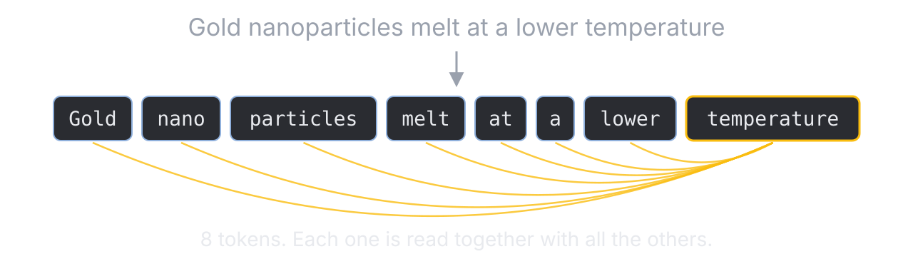
A token gets its meaning from the tokens around it.
1 · How an LLM works
Text in, one token out
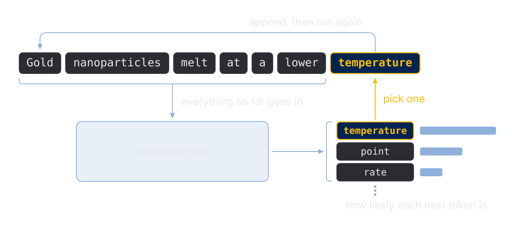
The model writes one token at a time, then reads everything again.
1 · How an LLM works
Inside the transformer
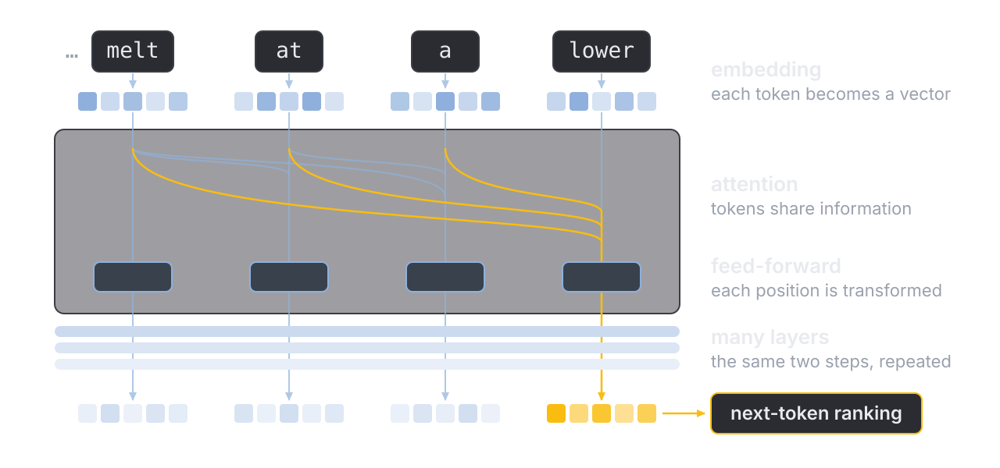
The last position gathers from every earlier token, layer after layer.
1 · How an LLM works
Keep context small and relevant
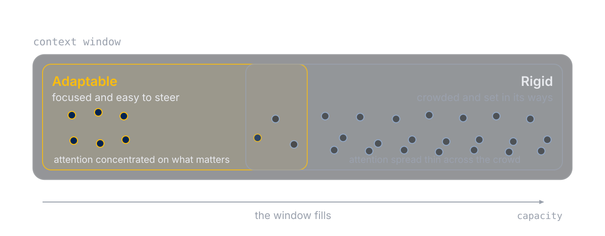
Everything in the window is read again on every turn.
2 · Why on your computer
Two places to work
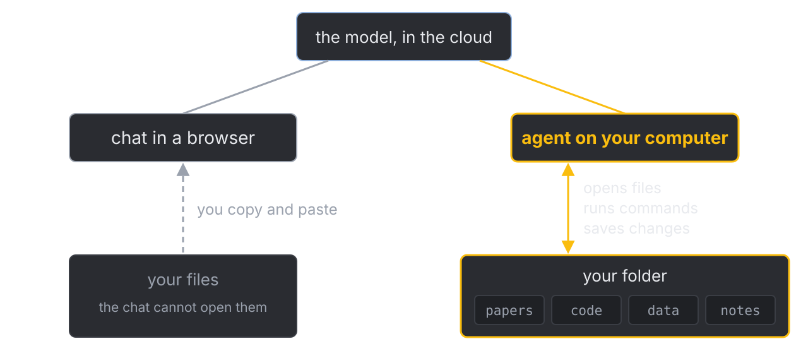
Same model. What changes is what it can reach.
2 · Why on your computer
It reads only what it needs
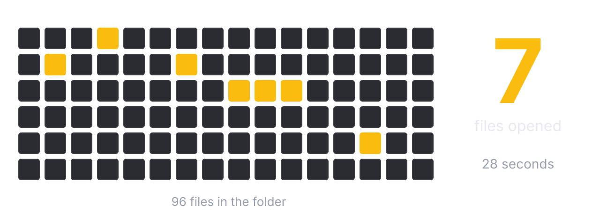
The agent chooses what to open. The folder has to show it where things are.
2 · Why on your computer
It can run and check
$ python3 tools/event_classifier/classify.py sample-data/events.csv
family count mean eV min eV
hop 60 0.616 0.432
exchange 40 0.919 0.782
concerted 20 1.312 1.087
An answer from output, not from memory.
2 · Why on your computer
The chat ends. The folder stays.
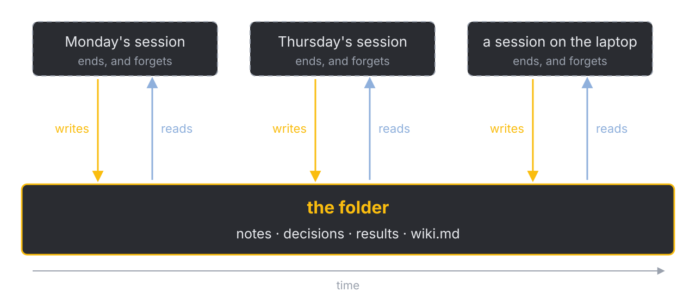
Anything worth keeping goes in a file.
2 · Why on your computer
Git carries it across computers
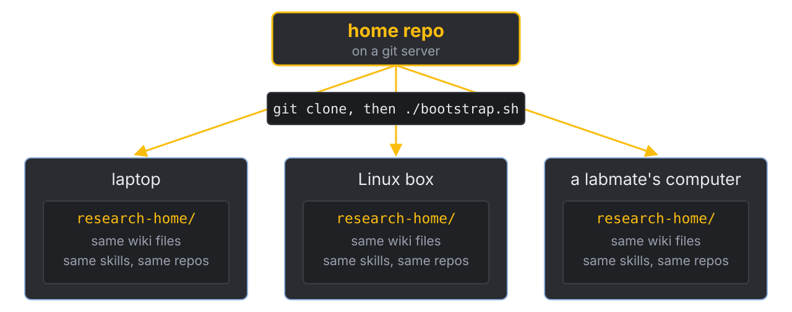
Clone once, and every computer has the same setup.
3 · One home folder
One folder, 13 git repos
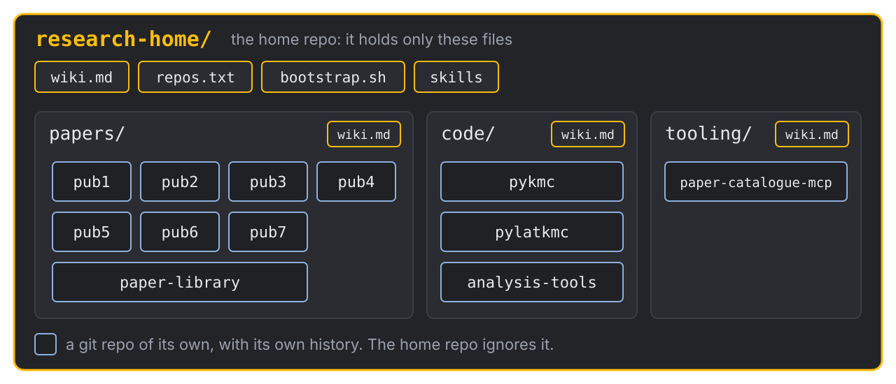
Each project keeps its own git history. The home repo holds the wiki files.
3 · One home folder
wiki.md: one line per folder
# wiki: research-home
- [papers/](papers/wiki.md): 7 publication repos, papers by topic
- [code/](code/wiki.md): two KMC codes and the analysis tools
- [tooling/](tooling/wiki.md): the paper search tool
What the folder is, then a link. The agent reads this file first.
3 · One home folder
Each wiki.md links to the next
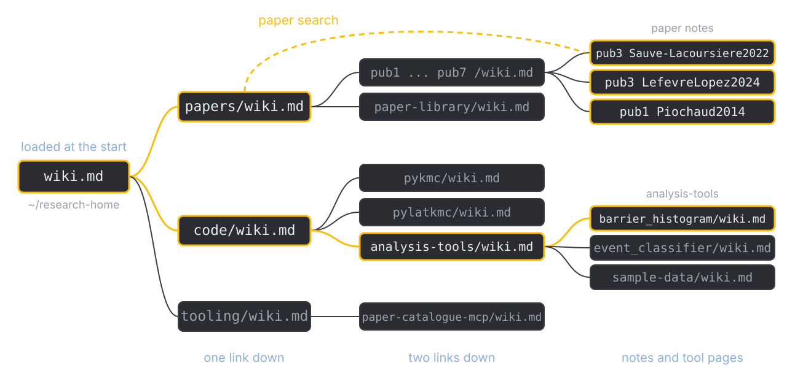
The agent follows the links. Gold: what it opened for one question.
3 · One home folder
Papers by topic
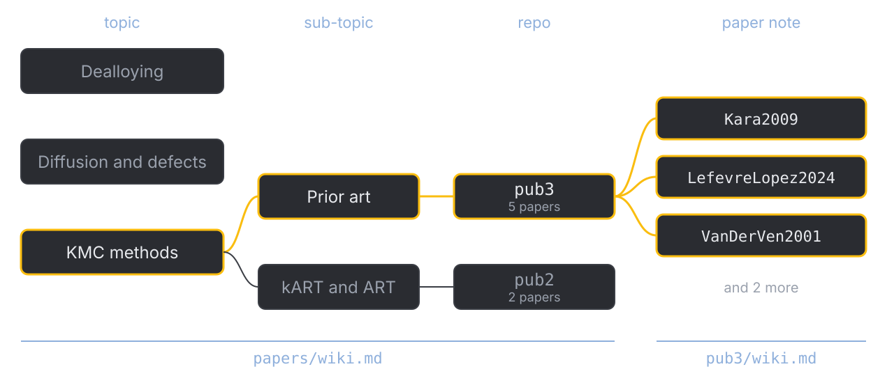
Topic, then repo, then one note per paper.
3 · One home folder
Keep the wiki up to date
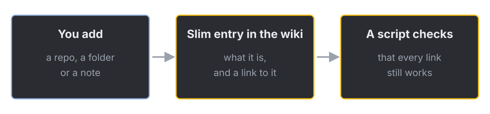
Keeping the wiki up to date improves agent performance.
4 · Skills, subagents, MCP
Three add-ons
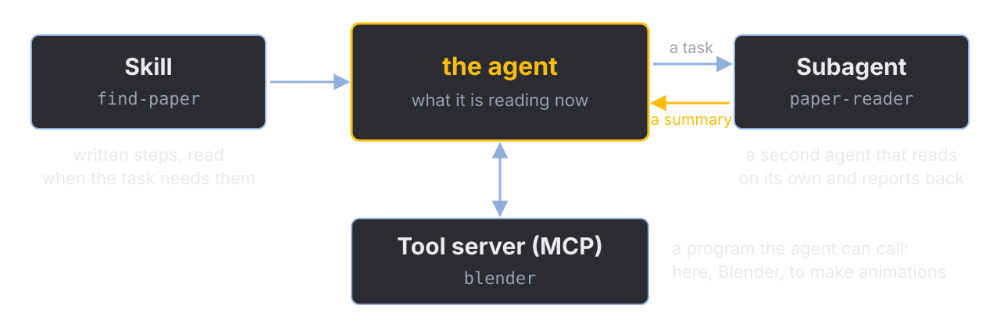
A subagent reads the full paper in its own context window. The main agent gets back only the relevant part.
4 · Skills, subagents, MCP
Keep what is always loaded slim
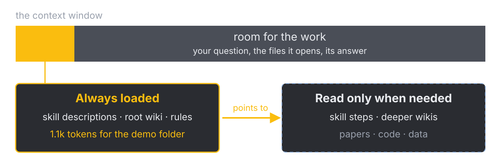
Few tokens spent on finding your way, enough to know where to look and how.
5 · Demo
Four things to watch
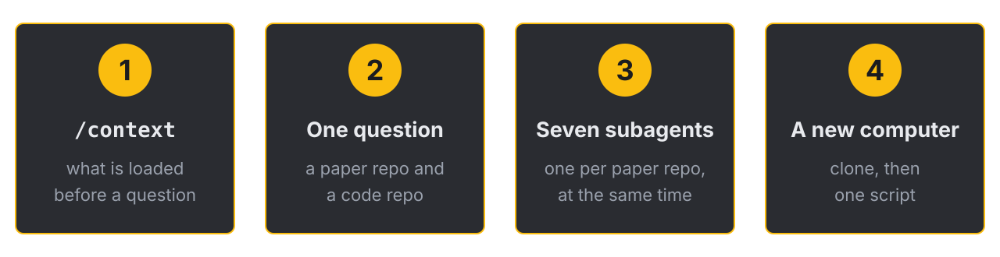
5 · Demo
Start with one folder
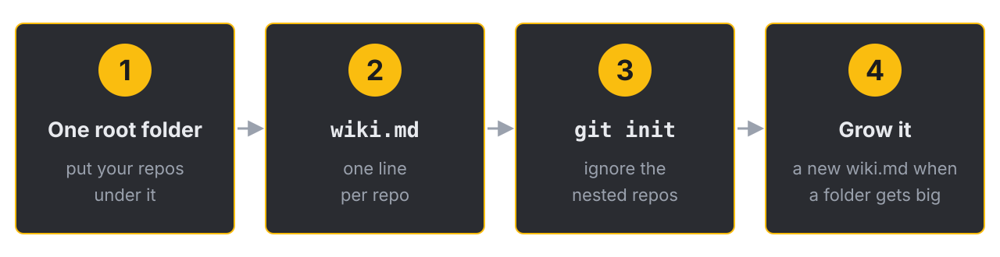
An agent is only as good as what it can find.
5 · Demo
Questions?
github.com/Kerrator/skills
Extra
Three limits
What the agent reads goes to the model provider
It runs commands as you: read each permission prompt
It can misread a file: ask for the path and open it
Extra
The question, step by step
“Which papers held here deal with vacancy diffusion in concentrated Ni-Fe-Cr alloys, and which script in this folder would give me the distribution of barriers in an event table?”
Sauvé-Lacoursière (2022), Unexpected role of prefactors in defects diffusion: the case of vacancies in the 55Fe-28Ni-17Cr concentrated solid-solution alloys. Acta Materialia 237, 118153. papers/pub3/notes/Sauve-Lacoursiere2022.md
Lefèvre López (2024), Harmonic transition state theory applied to vacancy diffusion pre-exponential factors in a concentrated solid-solution alloy. Physical Review Materials 8, 013609. papers/pub3/notes/LefevreLopez2024.md
Piochaud (2014), adjacent: point defects in fcc Fe-10Ni-20Cr by DFT; energetics, not diffusion. Physical Review B 89, 024101. papers/pub1/notes/Piochaud2014.md
Script:code/analysis-tools/tools/barrier_histogram/barrier_histogram.py. “I have not run it or opened the script itself; this comes from its wiki.”
Extra
Seven subagents: the numbers
“What does each paper repo under papers/ hold on surface diffusion or surface transport? Use one paper-reader subagent per repo.”
Subagents
7, one per publication repo
Tool calls inside the subagents
50
Tool calls in the main agent
8
Main context after the answer
50k tokens
Time
72 s
It found papers in pub1, pub3, pub4 and pub5 that the topic list misses.